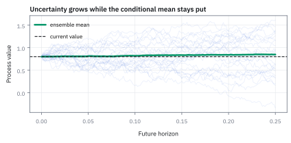
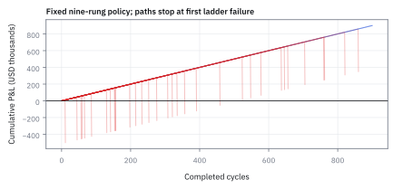
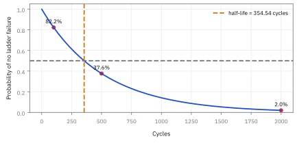

9.3 The Martingale Betting System
win rate 99.8% ที่ซ่อน drawdown \$511,000 และซื้อเวลาได้แต่ซื้อ edge ไม่ได้
คุณมีทุน \$1,000,000 เดิมพันเหรียญเที่ยงตรงไม้แรก \$1,000 แพ้แล้วเพิ่มเป็นสองเท่าจนกว่าจะชนะ ชนะเมื่อไรได้กำไร \$1,000 แล้วเริ่มรอบใหม่ โอกาสที่หนึ่งรอบจบด้วยกำไรคือเท่าไร และกำไรเฉลี่ยต่อรอบคือเท่าไร?
เฉลย: รอบหนึ่งจบด้วยกำไร 99.8% ของเวลา (511 จาก 512) แต่กำไรเฉลี่ยต่อรอบคือ \$0 พอดี เพราะ 1 ใน 512 รอบเสีย \$511,000 ถ้าเล่นซ้ำ 500 รอบ โอกาสที่ยังไม่เจอรอบนั้นเหลือแค่ 37.6%
ระบบเพิ่มเงินเป็นสองเท่าเมื่อแพ้คือที่มาของชื่อ martingale หัวข้อนี้นับทุกตัวเลขด้วยมือ และแสดงว่าทำไมไม่มีกฎการวางเงินใดเสก edge ได้จากเกมยุติธรรม
ศัพท์ที่ใช้ในหัวข้อนี้
- Martingale betting system
- กฎเพิ่มเงินเดิมพันเป็นสองเท่าหลังแพ้ เพื่อให้ชัยชนะครั้งถัดไปคืนขาดทุนเก่าทั้งหมดแล้วเหลือกำไรเท่าไม้แรก ใช้ศึกษาว่าการจัดขนาดไม้เปลี่ยนรูปร่างผลลัพธ์ แต่ไม่สร้าง edge
- stake
- เงินที่วางในไม้หนึ่ง ใช้คำนวณเงินที่ต้องมีและขาดทุนเมื่อผลออกผิดทาง
- bankroll
- เงินทุนที่กันไว้ให้กลยุทธ์นี้ ใช้กำหนดว่าบันไดสองเท่าต่อได้สูงสุดกี่ขั้น
- win rate
- สัดส่วนรอบที่จบด้วยกำไร ใช้บอกความถี่ของการชนะ แต่ไม่บอกขนาดของการแพ้
- edge
- กำไรเฉลี่ยต่อรอบ ใช้ตัดสินว่าเกมสร้างมูลค่าจริง หรือแค่ย้ายขาดทุนไปซ่อนไว้ในเหตุการณ์ที่เกิดยาก
- expected value
- ค่าเฉลี่ยของผลลัพธ์ที่ถ่วงด้วยโอกาส ใช้ตัดสินว่ากลยุทธ์ทำเงินได้จริงหรือแค่ชนะบ่อย
- tail risk
- ความเสียหายก้อนใหญ่ที่เกิดไม่บ่อย ใช้ถามว่าผลงานที่สวยเกิดเพราะยังไม่เจอเหตุการณ์นั้นหรือไม่
- drawdown
- การลดลงของทุนจากจุดสูงสุดก่อนหน้า ใช้กำหนดความเสียหายที่ผู้ลงทุนและ risk limit รับได้
- stopping time
- กฎหยุดที่ตัดสินได้จากสิ่งที่เห็นแล้วเท่านั้น เช่นหยุดเมื่อชนะครั้งแรก ใช้ระบุว่าจะอ่านผลของเกมตอนไหน
- Optional Stopping Theorem (OST)
- ผลที่ว่าถ้ากฎหยุดมีเพดานเวลา ค่าเฉลี่ยของเงินตอนหยุดเท่ากับเงินตอนเริ่มในเกมยุติธรรม ใช้พิสูจน์ว่ากฎหยุดไม่สร้างกำไรเฉลี่ย
- uniform integrability
- ชื่อในตำราของเงื่อนไขที่ว่าขาดทุนระหว่างทางต้องไม่ลึกได้ไม่จำกัด ใช้บอกว่าเมื่อไรเอา OST ไปใช้กับเกมที่ไม่มีเพดานเวลาได้
- house edge
- ส่วนที่เจ้ามือได้เปรียบต่อเงินที่วาง เช่น 1 ใน 37 ของรูเล็ต ใช้คำนวณว่าเงินที่หมุนผ่านโต๊ะถูกกินไปเท่าไร
- turnover
- เงินรวมที่วางผ่านโต๊ะในหนึ่งรอบ ใช้คูณกับ house edge เพื่อหาขาดทุนเฉลี่ย
- short volatility
- สถานะที่เก็บเงินเล็ก ๆ สม่ำเสมอเมื่อตลาดนิ่ง แต่เสียหนักเมื่อตลาดเหวี่ยงแรง เช่นการขาย option ของดัชนี S&P 500 ใช้เป็นตัวอย่างในตลาดของกำไรเล็กบ่อยกับขาดทุนใหญ่นาน ๆ ครั้ง
- carry trade
- กู้สกุลเงินดอกเบี้ยต่ำไปลงสกุลดอกเบี้ยสูงเพื่อกินส่วนต่าง ใช้เป็นอีกตัวอย่างที่ได้เงินเล็กสม่ำเสมอแต่เสียหนักเมื่อค่าเงินกลับทิศเร็ว
- Long-Term Capital Management (LTCM)
- กองทุนสหรัฐที่ใช้เงินกู้สูงเก็บส่วนต่างราคาเล็ก ๆ แล้วเสียหนักจนต้องถูกช่วยในปี 1998 ใช้เป็นตัวอย่างจริงของบันไดขาดทุนแบบในหัวข้อนี้
- risk committee
- กลุ่มที่อนุมัติทุนและ risk limit ของ desk ใช้ถามขนาดขาดทุน โอกาสของหาง และเงื่อนไขหยุดก่อนเปิดกลยุทธ์
สัญลักษณ์ที่ใช้ในหัวข้อนี้
| สัญลักษณ์ | ความหมาย | หน่วย |
|---|---|---|
| $b$ | stake ไม้แรก | USD |
| $B$ | bankroll ที่กันไว้ให้กลยุทธ์ | USD |
| $k$ | ลำดับไม้ภายในหนึ่งรอบ | ไม้ |
| $N$ | จำนวนขั้นสูงสุดที่ bankroll จ่ายไหว | ไม้ |
| $L_k$ | ขาดทุนสะสมหลังแพ้ติดกัน $k$ ไม้ | USD |
| $W_n$ | กำไรขาดทุนสะสมของรอบนั้นหลังไม้ที่ $n$ | USD |
| $\tau$ | ไม้แรกที่ชนะ | ไม้ |
| $\tau_N$ | ไม้ที่หยุดจริง คือไม้แรกที่ชนะ หรือไม้ที่ $N$ ถ้ายังไม่ชนะ | ไม้ |
| $R$ | จำนวนรอบที่เล่นซ้ำ | รอบ |
| $p$, $q$ | โอกาสชนะและแพ้ต่อไม้ | 0 ถึง 1 |
ที่มาที่ไป: ระบบที่ชนะ 99.8% ของเวลา และยังเจ๊งอยู่ดี
ระบบเพิ่มเงินเป็นสองเท่าเมื่อแพ้เป็นต้นกำเนิดของชื่อในหัวข้อ 9.1 เหตุผลที่ต้องวิเคราะห์จริงจังไม่ใช่เพราะจะไปเล่นพนัน แต่เพราะรูปแบบของมันตรงกับกลยุทธ์การเงินจำนวนมาก คือชนะเล็ก ๆ บ่อยมาก แล้วขาดทุนก้อนใหญ่นาน ๆ ครั้ง
การขาย option ที่ไกลจากราคาตลาด carry trade และกลยุทธ์เก็บส่วนต่างเล็ก ๆ ด้วยเงินกู้สูงล้วนมีรูปแบบนี้ ตัวเลขในหัวข้อนี้แสดงว่าอัตราชนะสูงลิ่วไม่บอกว่าคุ้มหรือไม่ และเงินทุนที่มีจำกัดเปลี่ยนคำตอบทั้งหมด
กลไก: stake โตเป็นสองเท่า แต่รางวัลไม่โต
ใช้เกมเหรียญที่ชนะหรือแพ้อย่างละครึ่ง ชนะได้เท่าที่วาง แพ้เสียเท่าที่วาง นี่เป็นแบบจำลองของการจัดขนาดไม้ ไม่ใช่คำอ้างว่าดัชนีขึ้นลงอย่างละครึ่งจริง เริ่มจากนับบันไดด้วยมือก่อน
นับบันไดด้วยมือ: stake เริ่ม \$1,000 แพ้ติดกันแล้วต้องวางเท่าไร เสียสะสมเท่าไร
| ไม้ที่ $k$ | stake $=1{,}000\times2^{k-1}$ | ขาดทุนสะสมถ้าแพ้ $L_k=1{,}000(2^{k}-1)$ | กำไรถ้าชนะไม้นี้ |
|---|---|---|---|
| 1 | 1,000 | 1,000 | 1,000 |
| 2 | 2,000 | 3,000 | 2,000 − 1,000 = 1,000 |
| 3 | 4,000 | 7,000 | 4,000 − 3,000 = 1,000 |
| 5 | 16,000 | 31,000 | 16,000 − 15,000 = 1,000 |
| 9 | 256,000 | 511,000 | 256,000 − 255,000 = 1,000 |
| 10 | 512,000 | 1,023,000 | (วางไม่ไหวด้วยทุน 1 ล้าน) |
คอลัมน์ขวาสุดคือข้ออ้างของระบบ: ชนะเมื่อไรก็ได้กำไร 1,000 เท่าเดิม คอลัมน์กลางคือราคาที่ต้องจ่ายเพื่อรอชัยชนะนั้น มันโตเป็นสองเท่าทุกแถว
ขั้นที่ 1 — stake และขาดทุนสะสม: รวมอนุกรมสองเท่าโดยไม่ต้องท่องสูตร
กติกามีข้อเดียว คือแพ้แล้ววางเพิ่มเป็นสองเท่า บรรทัดเหล่านี้แปลงกติกานั้นเป็นเงินที่ต้องมีในบัญชี
คูณผลรวมทั้งก้อนด้วยสอง ทุกพจน์เลื่อนขึ้นหนึ่งขั้น แล้วลบสองบรรทัดกัน พจน์กลางเหมือนกันหมดจึงหักทิ้ง เหลือพจน์ใหม่สุดลบพจน์เก่าสุด แพ้ติดกัน 10 ไม้ด้วยไม้แรกพันเดียว ติดลบไปแล้วกว่าหนึ่งล้าน
ขั้นที่ 2 — ชัยชนะครั้งแรกคืนบันไดเก่าทั้งหมด
ตรวจข้ออ้างหลักของระบบก่อน ว่าชนะครั้งเดียวคืนทุนที่เสียมาทั้งหมดได้จริงไหม ใช้สูตรของขั้นที่ 1 กับไม้ก่อนหน้า
เงินที่ได้เมื่อชนะเท่ากับเงินที่วางในไม้นั้น ลบขาดทุนของทุกไม้ก่อนหน้าแล้ว สองพจน์ใหญ่หักกันพอดี เหลือ b เสมอไม่ว่าชนะไม้ไหน ข้ออ้างนี้จริง และนี่คือสิ่งที่ทำให้ระบบขายได้ ความผิดไม่ได้อยู่ในพีชคณิต แต่อยู่ที่เงินในบัญชีมีจำกัด
ขั้นที่ 3 — พิสูจน์ว่าเงินของรอบนี้เป็น martingale: แยกสองสถานะ
หลังไม้ที่ n รอบนี้อยู่ได้แค่สองสถานะ คือชนะแล้วหยุดที่ +b หรือยังไม่ชนะและติดลบอยู่ที่ขั้นที่ 1 คำนวณไว้ ตรวจเงื่อนไข martingale ทีละสถานะ
ถ้าชนะแล้ว เกมหยุด เงินไม้หน้าเท่าเดิมแน่นอน ถ้ายังเล่นอยู่ ไม้ถัดไปวางสองเท่าของไม้ก่อน ชนะก็กลับไปที่ +b แพ้ก็ลึกลงอีกขั้น เฉลี่ยครึ่งต่อครึ่งแล้วยุบกลับมาเท่าเดิมพอดี
บรรทัดล่างลองด้วยเลขจริง หลังแพ้สองไม้ติดลบ \$3,000 ไม้ที่สามวาง \$4,000 ชนะได้ +\$1,000 แพ้ได้ −\$7,000 เฉลี่ย −\$3,000 เท่าเดิม ทั้งสองสถานะผ่าน เงินของรอบนี้จึงเป็น martingale จริงตามชื่อ
Figure 9.3a — บันไดของเงินทุน

กำไรเป้าหมายคงที่ \$1,000 แต่ stake ขั้นที่ 9 โตถึง \$256,000 และขาดทุนสะสมแตะ \$511,000 ความไม่สมมาตรไม่ได้หายไป แค่ถูกผลักไปปลายบันได
ขั้นที่ 4 — ทุนหนึ่งล้านต่อบันไดได้กี่ขั้น
ข้ออ้างของขั้นที่ 2 จะจริงก็ต่อเมื่อวางไม้ถัดไปได้เสมอ ทุนต้องจ่ายขาดทุนสะสมของทุกขั้นที่วางได้ครบ เงื่อนไขจึงอยู่ที่ผลรวมของ stake ไม่ใช่ทุนหารไม้แรก
ย้ายข้างให้เหลือกำลังสองอยู่ข้างเดียว แล้วไล่ดูว่ากำลังสองตัวไหนยังไม่เกิน 1,001 ขั้นที่ 9 ใช้ทุนรวม \$511,000 ยังไหว ขั้นที่ 10 ต้องใช้รวม \$1,023,000 เกินทุน คนที่ตั้งเพดานเป็นทุนหารไม้แรกจะได้ 1,000 ขั้น ซึ่งผิดไปไกลมาก
ขั้นที่ 5 — ตรวจขั้นที่ 10 ด้วยเงินสดจริง
ตรวจด้วยเงินสดว่าขั้นถัดไปวางไม่ได้จริง จุดที่คนมองข้ามคือบัญชียังเหลือเงินเกือบครึ่งล้าน แต่เดินต่อไม่ได้แล้ว
หลังแพ้ 9 ไม้เหลือเงิน \$489,000 แต่ไม้ที่ 10 ต้องวาง \$512,000 จึงวางไม่ได้ รอบนั้นจบด้วยขาดทุน \$511,000 ทั้งที่บัญชียังไม่เป็นศูนย์ หัวข้อนี้เรียกเหตุการณ์นี้ว่าบันไดพัง ไม่ใช่หมดตัว
ขั้นที่ 6 — โอกาสของสองปลายทาง
เมื่อรู้เพดานแล้ว หนึ่งรอบจบได้สองแบบ คือชนะภายใน 9 ไม้ หรือแพ้ติดกันครบ 9 ไม้ แต่ละไม้เป็นอิสระต่อกัน
บันไดพังต้องแพ้ 9 ไม้ติด คูณครึ่งเก้าครั้งได้ 1 ใน 512 ผลลัพธ์อื่นทั้งหมดคือชนะก่อนถึงเพดาน ตัวเลข 99.8% นี้คือสิ่งที่โบรชัวร์ของกลยุทธ์แบบนี้โชว์เสมอ
ขั้นที่ 7 — กำไรเฉลี่ยของหนึ่งรอบ: หักกันเหลือศูนย์พอดี
เอาโอกาสคูณผลลัพธ์ของทั้งสองปลายทางแล้วรวมกัน นี่คือคำถามเดียวที่ตัดสินว่าระบบนี้มี edge หรือไม่
เลข 511 โผล่สองที่ด้วยเหตุผลเดียวกัน ฝั่งชนะมี 511 เส้นทางที่ได้คนละ \$1,000 ฝั่งแพ้มีเส้นทางเดียวที่เสีย 511 เท่าของ \$1,000 สองก้อนจึงเท่ากันพอดี ไม่ใช่เรื่องบังเอิญของตัวเลขชุดนี้
ขั้นที่ 8 — ความกว้างของผลลัพธ์เมื่อหยุดหลังชนะหรือครบ n ไม้
ค่าเฉลี่ยนิ่ง แต่ความกว้างไม่นิ่ง ใช้กลยุทธ์เดียวกับที่นับมา คือหยุดเมื่อชนะครั้งแรกหรือแพ้ครบ n ไม้ ผลลัพธ์จึงมีแค่สองค่า
ค่าเฉลี่ยเป็นศูนย์ variance จึงเหลือค่าเฉลี่ยของผลลัพธ์กำลังสอง กระจายวงเล็บของฝั่งแพ้แล้วคูณเข้า เศษส่วนสองตัวหักกันเหลือ $2^n-1$
รอบที่กำไรเป้าหมายแค่ \$1,000 มีความผันผวนถึง \$22,605 และฝั่งแพ้ยังเสีย \$511,000 ค่าเฉลี่ยที่นิ่งไม่ได้แปลว่าอะไร ๆ ก็นิ่ง คนที่เล่นจริงไม่ได้เจอค่าเฉลี่ย เขาเจอเส้นทางเดียวที่เดินอยู่
Figure 9.3b — ชนะบ่อย แต่ค่าเฉลี่ยเป็นศูนย์

กราฟแสดงเงินหลังคูณโอกาสแล้ว ฝั่งชนะได้ 1,000 คูณ 511/512 เท่ากับ 998.05 ฝั่งแพ้เสีย 511,000 คูณ 1/512 เท่ากับ −998.05 รวมกันเป็นศูนย์ แม้โอกาสแพ้มีเพียง 1/512
ขั้นที่ 9 — ทำไมศูนย์ไม่ใช่เรื่องบังเอิญ: กฎหยุดที่มีเพดานเวลา
กฎหยุดคือหยุดเมื่อชนะครั้งแรก หรือเมื่อแพ้ครบ 9 ไม้ แล้วแต่อะไรมาก่อน หลังหยุด เงินไม่ขยับอีก เงินตอนหยุดจึงเท่ากับเงินหลังไม้ที่ 9 พอดี แล้วใช้กฎเฉลี่ยสองชั้นของหัวข้อ 9.1
เพราะเงินของรอบนี้เป็น martingale ตามขั้นที่ 3 ค่าเฉลี่ยของทุกไม้ถอยกลับไปเท่ากับจุดเริ่มต้นทีละไม้ กฎหยุดที่มีเพดานเวลาจึงไม่สร้างกำไรเฉลี่ยได้เลย ตำราเรียกข้อสรุปนี้ว่า Optional Stopping Theorem
ทุนไม่จำกัด: ชนะแน่นอน แต่ข้อสรุปเดิมพัง
ถ้าวางเพิ่มได้ตลอดไป ชัยชนะแรกต้องมาถึงสักวัน เงินตอนหยุดเป็น +\$1,000 ทุกเส้นทาง ค่าเฉลี่ยจึงเป็น \$1,000 ไม่ใช่ศูนย์ ขัดกับขั้นที่ 9 หรือไม่? ไม่ขัด เพราะขั้นที่ 9 ใช้เพดานเวลา 9 ไม้ ที่นี่ไม่มีเพดาน และขาดทุนระหว่างทางลึกได้ไม่จำกัด ตำราเรียกเงื่อนไขที่พังนี้ว่า uniform integrability
ขั้นที่ 10 — เวลารอเฉลี่ยสั้น แต่เงินที่ต้องเตรียมไม่จำกัด
ถ้าลืมเรื่องทุนไปก่อน ระบบนี้ดูดีมาก เพราะรอเฉลี่ยแค่สองไม้ก็ชนะ ขั้นนี้ชี้ว่าเงินที่ต้องเตรียมไว้ต่างหากที่เป็นปัญหา
จะได้วางไม้ที่ k ต้องแพ้มาก่อน k−1 ไม้ นับจำนวนไม้เฉลี่ยด้วยการบวกโอกาสที่ยังเล่นอยู่ของแต่ละไม้ ได้ 2 ไม้
แต่ไม้ลึกลงไปเกิดยากขึ้นครึ่งหนึ่ง ขณะที่ต้องวางมากขึ้นสองเท่า ผลคูณจึงเท่ากับ b ทุกไม้ บวกไม่รู้จบได้อนันต์ รอไม่นานโดยเฉลี่ยไม่ได้แปลว่าใช้ทุนน้อย
Figure 9.3c — เส้นทุนหลายเส้นเปิดโปงการกระโดดที่ซ่อนอยู่

หลายเส้นทางไต่ขึ้นทีละ \$1,000 อยู่นาน ก่อนกระโดดลง \$511,000 ครั้งเดียว เส้นทางที่ยังไม่เจอบันไดพังไม่ใช่หลักฐานว่าหางหายไป
ขั้นที่ 11 — เล่นซ้ำหลายรอบ: โอกาสรอดลดลงทุกรอบ
เล่นรอบเดียวรอดง่ายมาก แต่ไม่มีใครเล่นรอบเดียว แต่ละรอบเป็นอิสระต่อกัน และหยุดกลยุทธ์เมื่อบันไดพังครั้งแรก โอกาสรอดจึงเป็นผลคูณของโอกาสรอดทีละรอบ
ใช้ log เพื่อเลี่ยงการยกกำลังเลขใหญ่ ประมาณ 355 รอบโอกาสรอดเหลือครึ่งเดียว ถ้าเล่นวันละรอบ นั่นคือเกือบหนึ่งปีของผลงานที่ดูสวย นานพอให้การจัดขนาดไม้ที่แย่ดูเหมือนฝีมือ
สองบรรทัดล่างตรวจว่าเงินคืนหมดจริง โอกาสพังต่อรอบคือ 1 ใน 512 จึงรอเฉลี่ย 512 รอบ แบบเดียวกับที่ขั้นที่ 10 รอชัยชนะเฉลี่ย 2 ไม้เมื่อโอกาสคือครึ่งหนึ่ง ในนั้นชนะ 511 รอบได้ \$511,000 แล้วคืนหมดในรอบที่พัง
Figure 9.3d — โอกาสรอดลดลงเรื่อย ๆ ขณะที่คำโฆษณายังดูดี

หลัง 500 รอบเหลือเพียง 37.6% ที่ยังไม่เจอบันไดพัง และหลัง 2,000 รอบเหลือ 2.0% หางมาช้าพอให้การจัดขนาดไม้ที่แย่ดูเหมือนฝีมือ
ขั้นที่ 12 — เติมทุนเป็น \$1,023,000: ซื้อเวลาได้ แต่ซื้อ edge ไม่ได้
คำตอบตามสัญชาตญาณคือเพิ่มทุน ทุน \$1,023,000 จ่ายบันไดได้ครบ 10 ขั้นพอดีตามขั้นที่ 1 คำนวณทุกตัวเลขใหม่ด้วยวิธีเดิม
เพิ่มทุนเกือบเท่าตัวซื้อบันไดได้อีกขั้นเดียว โอกาสพังต่อรอบลดครึ่งหนึ่ง อายุครึ่งชีวิตยาวขึ้นเท่าตัว แต่เมื่อพังจะเสีย \$1,023,000 และกำไรเฉลี่ยยังเป็นศูนย์เป๊ะ ทุนที่เพิ่มขึ้นซื้อได้เพียงเวลา
ขั้นที่ 13 — เมื่อเกมมี house edge: รูเล็ต 37 ช่อง
รูเล็ตแบบยุโรปชนะ 18 จาก 37 ช่อง แพ้ 19 ช่อง ทบเงิน 9 ขั้นเหมือนเดิม ขาดทุนเฉลี่ยพุ่งทันที เพราะวางเงินก้อนใหญ่เพื่อลุ้นกำไรแค่ \$1,000
แพ้ติดกัน 9 ไม้มีโอกาส 0.2483% ชนะได้ \$1,000 แต่พังเสีย \$511,000 ค่าเฉลี่ยจึงขาดทุน \$271.27 ต่อรอบ
ตรวจอีกทาง เจ้ามือกิน 1 ใน 37 หรือ 2.70% ของเงินที่วาง ไม่ใช่ของกำไรเป้าหมาย รอบหนึ่งหมุนเงินเฉลี่ย \$10,036.89 คูณ 2.70% ได้ \$271.27 ตรงกันพอดี
คำตอบของ risk committee
โจทย์ให้อะไรมาบ้าง: ทุน \$1,000,000 ไม้แรก \$1,000 ในเกมเหรียญเที่ยงตรงที่ชนะได้เท่าที่วาง แพ้เสียเท่าที่วาง
คำตอบ: (ก) ทบได้ 9 ขั้น เสียสะสมสูงสุด \$511,000 (ข) โอกาสบันไดพังต่อรอบคือ 1/512 หรือ 0.195% (ค) กำไรเฉลี่ยต่อรอบคือ \$0 เป๊ะ (ง) ถ้าเติมทุนเป็น \$1,023,000 โอกาสพังเหลือ 1/1,024 แต่กำไรเฉลี่ยยังเป็น \$0 (จ) ถ้ามี house edge 2.70% แบบรูเล็ต กำไรเฉลี่ยเป็น −\$271.27 ต่อรอบ จึงไม่อนุมัติกลยุทธ์นี้
ตรวจเองใน 10 วินาที: 2⁹ − 1 = 511 และ (511/512)(1,000) − (1/512)(511,000) = 0
แปลว่าอะไร: กำไรเล็กบ่อยบวกขาดทุนมหาศาลนาน ๆ ครั้งคือหน้าตาของ short volatility และ carry trade กองทุน LTCM ในปี 1998 และกองทุนที่ขายความผันผวนในเดือนกุมภาพันธ์ 2018 ล้วนจบด้วยบันไดแบบเดียวกันนี้
ลองเอง — ทุน \$50,000 ไม้แรก \$100
โจทย์ให้อะไรมาบ้าง: ทุน \$50,000 ไม้แรก \$100 เกมเหรียญเที่ยงตรง ทบสองเท่าเมื่อแพ้
คำตอบ: $2^N$ ต้องไม่เกิน 50,000/100 + 1 = 501 จึงได้ N = 8 (256 ไม่เกิน 501 แต่ 512 เกิน) ขาดทุนเมื่อพังคือ 100 × 255 = \$25,500 โอกาสพังต่อรอบ 1/256 = 0.39% กำไรเฉลี่ย (255/256)(100) − (1/256)(25,500) = 99.61 − 99.61 = \$0 เล่น 100 รอบรอดแค่ 67.6%
ตรวจเองใน 10 วินาที: ความผันผวนต่อรอบคือ 100 × √255 = \$1,597 ใหญ่กว่ากำไรเป้าหมาย \$100 เกือบ 16 เท่า
แปลว่าอะไร: ขนาดทุนเปลี่ยนแค่จำนวนขั้นและจำนวนรอบก่อนพัง ไม่เปลี่ยนกำไรเฉลี่ย ไม่ว่าจะเลือกตัวเลขชุดไหน
กับดัก: อ่าน win rate เป็นความปลอดภัย และใช้ข้อสรุปของเกมมีเพดานกับเกมไม่มีเพดาน
win rate 99.8% ไม่มีข้อมูลเรื่องขนาดความเสียหายเมื่อแพ้อยู่เลย ขั้นที่ 7 แสดงว่ามันอยู่ร่วมกับกำไรเฉลี่ยศูนย์ได้ การเพิ่มทุนเท่าตัวซื้อบันไดได้เพียงอีกขั้นเดียว และการเพิ่มขนาดไม้เวลาแพ้ขยายต้นทุนซื้อขาย ณ จุดที่พอร์ตเปราะบางที่สุดพอดี
อีกกับดักคือเอาคำตอบชนะแน่นอนของเกมทุนไม่จำกัดมาใช้กับเงินจริง ความแน่นอนนั้นแลกมากับเงินที่ต้องเตรียมไม่จำกัดตามขั้นที่ 10 ซึ่งไม่มีใครมี
ข้อจำกัด: วิธีนี้สมมติอะไร และของจริงเป็นอย่างไร
| เรื่อง | วิธีนี้สมมติว่า | ของจริงเป็นอย่างไร | ผลที่ตามมาเวลาใช้งาน |
|---|---|---|---|
| โอกาสชนะ | โอกาสชนะครึ่งต่อครึ่งคงที่ | ในตลาดจริงโอกาสเปลี่ยนและมักแย่ลงตอนที่แพ้ติดกัน | ระบบพังเร็วกว่าที่คำนวณไว้ |
| การวางเดิมพันได้ | วางเงินเพิ่มเป็นสองเท่าได้เสมอ | สภาพคล่องหมดก่อน และคู่สัญญาเรียกหลักประกันเพิ่ม | พังก่อนถึงขั้นที่คำนวณไว้ |
| จำนวนรอบ | เล่นได้เรื่อย ๆ | ผู้ลงทุนถอนเงินหลังเห็นการขาดทุนครั้งใหญ่ | ไม่มีโอกาสได้เล่นรอบที่จะกลับมาชนะ |
สามแถวนี้ชี้ทางเดียวกัน คือความเสี่ยงจริงแย่กว่าที่แบบจำลองบอก ไม่เคยดีกว่า
แล้วเอาไปใช้ทำอะไรได้จริงบ้าง
ใช้ตรวจกลยุทธ์ที่เสนอมาว่าซ่อนบันไดแบบนี้อยู่หรือไม่ โดยถามสามข้อ: เสียได้มากที่สุดเท่าไร ทุนที่ต้องใช้ระหว่างทางเป็นเท่าไร และกฎหยุดคืออะไร ก่อนเชื่อตัวเลข win rate
ใช้อธิบายกับผู้ลงทุนว่าทำไมผลงานที่ดีต่อเนื่องหนึ่งปีจึงยังไม่ใช่หลักฐาน เพราะขั้นที่ 11 แสดงว่ากลยุทธ์ที่กำไรเฉลี่ยเป็นศูนย์รอดได้เกือบปีครึ่งหนึ่งของเวลา
โค้ดตรวจบันไดเดิมพันสองเท่า ทั้งเกมเที่ยงตรงและรูเล็ต
import numpy as np
from math import log, sqrt
b = 1000
L = lambda k: b * (2 ** k - 1)
assert L(10) == 1_023_000 and all(b * 2 ** (k - 1) - L(k - 1) == b for k in range(1, 15))
N = max(k for k in range(1, 30) if L(k) <= 1_000_000)
assert N == 9 and 1_000_000 - L(9) == 489_000 < b * 2 ** 9
p_fail = 0.5 ** 9
assert abs(p_fail - 1 / 512) < 1e-15 and (1 - p_fail) * b + p_fail * (-L(9)) == 0
assert abs(b * sqrt(2 ** 9 - 1) - 22_605) < 1
lr = log(511 / 512)
assert abs(lr + 0.0019550) < 5e-8 and abs((511 / 512) ** 500 - 0.376) < 5e-4 and abs(log(0.5) / lr - 354.54) < 5e-3
assert abs((1023 / 1024) ** 500 - 0.614) < 5e-4 and abs(log(0.5) / log(1023 / 1024) - 709.4) < 0.05
q = 19 / 37
ev = (1 - q ** 9) * b + q ** 9 * (-L(9))
turnover = b * sum((2 * q) ** k for k in range(9))
assert abs(q ** 9 - 0.002483) < 5e-7 and abs(ev + 271.27) < 5e-3
assert abs(turnover - 10_036.89) < 5e-3 and abs(turnover / 37 + ev) < 1e-6
first_win = np.random.default_rng(12).geometric(0.5, 4_000_000)
W = np.where(first_win <= 9, b, -L(9))
assert abs(W.mean()) < 50 and abs(W.std() / (b * sqrt(511)) - 1) < 0.02โค้ดยืนยันว่าชัยชนะครั้งแรกคืนบันไดเก่าได้ \$1,000 ทุกขั้น ทุนหนึ่งล้านรับได้ 9 ขั้น ค่าเฉลี่ยต่อรอบคือศูนย์พอดี โอกาสรอด 500 รอบเหลือ 37.6% และในรูเล็ตขาดทุนเฉลี่ย \$271.27 เท่ากับยอดเดิมพันหาร 37
สรุปที่ใช้ได้จริง
- การทบสองเท่าเปลี่ยนรูปร่างผลลัพธ์ แต่ไม่สร้าง edge จากเกมยุติธรรม เงินของรอบเป็น martingale ทุกไม้
- ทุน \$1,000,000 กับไม้แรก \$1,000 รองรับได้ 9 ขั้น และเสีย \$511,000 เมื่อบันไดพัง
- win rate 99.8% อยู่ร่วมกับกำไรเฉลี่ย \$0 ได้ เพราะขาดทุนใหญ่กว่ากำไร 511 เท่า
- เล่นซ้ำ 500 รอบรอด 37.6% เติมทุนเป็น \$1,023,000 รอด 61.4% แต่กำไรเฉลี่ยยังเป็นศูนย์
- มี house edge 2.70% แบบรูเล็ต การทบเงินขาดทุนเฉลี่ย \$271.27 ต่อรอบ เพราะเงินหมุนผ่านโต๊ะรอบละ \$10,036.89
- กฎหยุดที่มีเพดานเวลาไม่สร้างกำไรเฉลี่ย ทุนไม่จำกัดชนะแน่นอนได้เพราะต้องเตรียมเงินไม่จำกัด